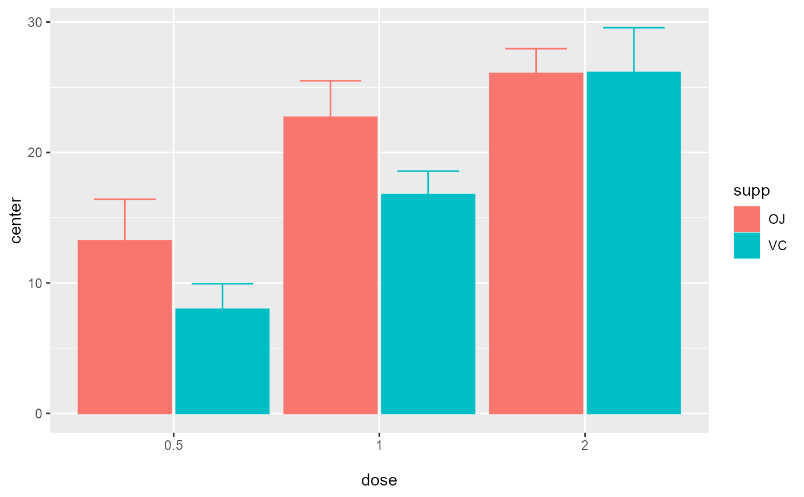

superbData.Rdplotsuberb plots standard error or confidence interval for various descriptive statistics under various designs, sampling schemes, population size and purposes, according to the suberb framework. See (Cousineau 2017) for more.
superbData( data, BSFactor = NULL, WSFactor = NULL, factorOrder, variables, statistic = "mean", errorbar = "CI", gamma = 0.95, adjustments = list(purpose = "single", popSize = Inf, decorrelation = "none", samplingDesign = "SRS"), preprocessfct = NULL, postprocessfct = NULL, clusterColumn = "" )
| data | Dataframe in wide format |
|---|---|
| BSFactor | The name of the columns containing the between-subject factor(s) |
| WSFactor | The name of the within-subject factor(s) |
| factorOrder | Order of factors as shown in the graph (x axis, groups, horizontal panels, vertical panels) |
| variables | The dependent variable(s) |
| statistic | The summary statistic function to use |
| errorbar | The function that computes the error bar. Should be "CI" or "SE" or any function name. Defaults to "SE" |
| gamma | The coverage factor; necessary when errorbar == "CI". Default is 0.95. |
| adjustments | List of adjustments as described below: popsize: Size of the population under study. Defaults to Inf purpose: The purpose of the comparisons. Defaults to "single". Can be "single", "difference" or "tryon". decorrelation: Decorrelation method for repeated measure designs. Chooses among the methods ("CM", "LM", "CA" or "none"). Defaults to "none". samplingDesign: Sampling method to obtain the sample. implemented sampling is "SRS" (Simple Randomize Sampling) and "CRS" (Cluster-Randomized Sampling). Default is adjustments = list(purpose = "single", popSize = Inf, decorrelation = "none", samplingDesign = "SRS") |
| preprocessfct | is a transform (or vector of) to be performed first on data matrix of each group |
| postprocessfct | is a transform (or vector of) |
| clusterColumn | used in conjunction with samplingDesign = "CRS", indicates which column contains the cluster membership |
a plot with the correct error bars or a table of those summary statistics. The plot is a ggplot2 object with can be modified with additional declarations.
Cousineau D (2017). “Varieties of confidence intervals.” Advances in Cognitive Psychology, 13, 140--155. doi: 10.5709/acp-0214-z , https://doi.org/10.5709/acp-0214-z.
# basic example using a built-in dataframe as data; # by default, the mean is computed and the error bar are 95% confidence intervals superbPlot(ToothGrowth, BSFactor = c("dose", "supp"), variables = "len")# example changing the summary statistics to the median and # the error bar to 90% confidence intervals superbData(ToothGrowth, BSFactor = c("dose", "supp"), variables = "len", statistic = "median", errorbar = "CI", gamma = .90)#> dose supp median - 90 % CI width + 90 % CI width #> 1 0.5 OJ 12.25 -3.240079 3.240079 #> 2 0.5 VC 7.15 -1.995492 1.995492 #> 3 1 OJ 23.45 -2.841396 2.841396 #> 4 1 VC 16.50 -1.827429 1.827429 #> 5 2 OJ 25.95 -1.928960 1.928960 #> 6 2 VC 25.95 -3.485660 3.485660# example introducing adjustments for pairwise comparisons # and assuming that the whole population is limited to 200 persons superbData(ToothGrowth, BSFactor = c("dose", "supp"), variables = "len", adjustments = list( purpose = "difference", popSize = 200) )#> dose supp mean - 95 % CI width + 95 % CI width #> 1 0.5 OJ 13.23 -4.397502 4.397502 #> 2 0.5 VC 7.98 -2.708323 2.708323 #> 3 1 OJ 22.70 -3.856401 3.856401 #> 4 1 VC 16.77 -2.480224 2.480224 #> 5 2 OJ 26.06 -2.618024 2.618024 #> 6 2 VC 26.14 -4.730810 4.730810# This example is based on repeated measures library(lsr) library(gridExtra) options(superb.debug = 'none') # shut down 'warnings' and 'design' interpretation messages # define shorter column names... names(Orange) <- c("Tree","age","circ") # turn the data into a wide format Orange.wide <- longToWide(Orange, circ ~ age) superbData( Orange.wide, WSFactor = "age(7)", variables = c("circ_118","circ_484","circ_664","circ_1004","circ_1231","circ_1372","circ_1582"), adjustments = list(purpose = "difference", decorrelation = "none") )#> age mean - 95 % CI width + 95 % CI width #> 1 1 31.0 -2.483328 2.483328 #> 2 2 57.8 -14.341085 14.341085 #> 3 3 93.2 -30.272166 30.272166 #> 4 4 134.2 -45.543856 45.543856 #> 5 5 145.6 -51.324448 51.324448 #> 6 6 173.4 -57.661892 57.661892 #> 7 7 175.8 -58.442686 58.442686superbData( Orange.wide, WSFactor = "age(7)", variables = c("circ_118","circ_484","circ_664","circ_1004","circ_1231","circ_1372","circ_1582"), adjustments = list(purpose = "difference", decorrelation = "CM") )#> age mean - 95 % CI width + 95 % CI width #> 1 1 31.0 -36.59726 36.59726 #> 2 2 57.8 -29.27023 29.27023 #> 3 3 93.2 -13.24987 13.24987 #> 4 4 134.2 -11.25778 11.25778 #> 5 5 145.6 -16.76345 16.76345 #> 6 6 173.4 -24.46650 24.46650 #> 7 7 175.8 -25.42244 25.42244